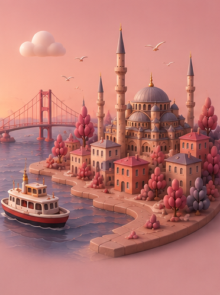

Дизайн-пакет · хендофф
Личная операционная система: цели года → квартала → месяца → недели → дня, мягкая RPG-геймификация, кривая энергии совы и ИИ-«Летописец». Без стриков и чувства вины.

То, что выросло из этого пакета: живое приложение с сохранением данных, офлайном и установкой на телефон.
Открыть приложение → High-fidelityРабочий прототип со всей логикой состояний: онбординг, День, Планы, Сферы, Привычки, Тело, Внутри, Я и шторки. Финальные цвета, типографика и копирайтинг — воссоздавать близко к пикселю.
Открыть прототип → 8 раундовИстория исследования: раунды 1–6 — лоу-фай структура и флоу, раунды 7–8 — хай-фай экраны в стилистике прототипа. Здесь живут экраны, не вошедшие в прототип.
Открыть вайрфреймы → Для разработкиПолное описание экранов, интеракций, состояния, дизайн-токенов, ассетов и рекомендаций по стеку — README пакета.
Читать README →19–32px, цвет #8e2b32
400/500/600 · основной 13.5px, подписи 11–12.5px, CTA 14.5px
Файлы .dc.html — интерактивные дизайн-референсы. Задача разработчика — воссоздать эти экраны в целевом стеке (для MVP разумны React Native или Flutter), используя HTML как источник точных цветов, отступов, копирайтинга и логики поведения.
Логика прототипа написана как React-класс class Component внутри Prototype.dc.html: state, обработчики и производные значения читаются прямо из кода. Файл support.js — рантайм прототипа, в реализацию не переносится.